SSH¶
The SSH protocol uses encryption to secure the connection between a client and a server. All user authentication, commands, output, and file transfers are encrypted to protect against attacks in the network.
More information here: SSH Academy
An SSH connection can be through a terminal, via an SSH client or through something like ThinLinc (which includes an SSH client as well as a graphical interface).
If you are using a stand-alone SSH client (for instance through a terminal), then you must also install an X11 server if you are working with something (like Matlab perhaps) that you would like to use a graphical interface for. This is usually slower than through ThinLinc or OpenOnDemand, so doing that is recommended if this is your use case.
In this chapter, however, we are looking at connecting through a stand-alone SSH client.
Connecting from Windows¶
If you are connecting to HPC2N from a Windows system, you need to install an ssh client to connect. In some cases using just a terminal window is preferred, and this section looks at SSH clients for that. Several exists, both commercial and free. Here are some of the more common ones:
If you want to be able to open graphical displays (say for opening the Matlab graphical interface), you need an X11 server. These are commonly used:
Perhaps you also need to transfer files between your own home computer and HPC2N’s systems. You need to use a secure protocol, so either sftp or scp will work, but not standard ftp.
- WinSCP (Commercial)
- FileZilla (only sftp) (free)
- PSCP/PSFTP (free)
- Cyberduck (free)
- MobaXterm (Commercial. The free version has limits to the file transfers)
In this section we will give brief examples for Cyberduck, WinSCP, MobaXterm, PuTTy, and Xming.
In all cases, we strongly advice against saving passwords.
The simplest way to connect to HPC2N is to use either PuTTy together with Xming, or to use MobaXterm, unless you need a Linux-like environment on your Windows machine (Windows Subsystem for Linux (WSL)).
Note
Remember that the accounts at HPC2N and SUPR are separate.
In the welcome mail you got when your HPC2N account was created, there was a link to create a first, temporary password. When you have logged in using that, please change the password.
SSH clients and X11 servers¶
PuTTY¶
- Download PuTTY from here.
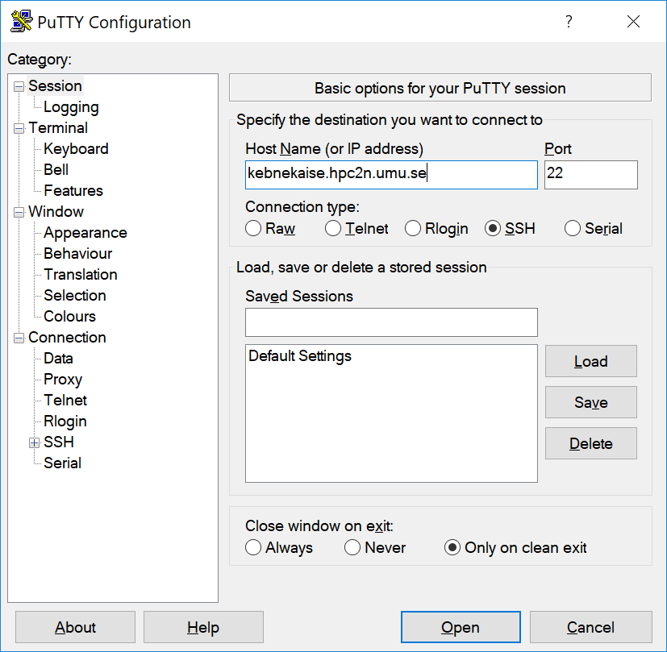
- Get the Zip file which contains all of PuTTY, PSCP, and PSFTP.
- Unzip the downloaded zip-file, then run “putty.exe”.
- In the window that opens, under ‘Session’ enter the host name.
- In the picture, it is entered for Kebnekaise (kebnekaise.hpc2n.umu.se).
- When you click ‘Open’ you will be prompted for your HPC2N username and password.
- In the picture below, you can see how it can look when logged in.
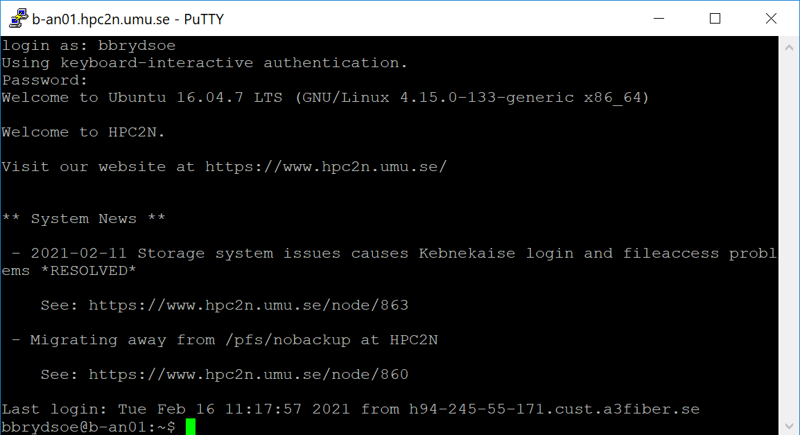
PuTTy and X11 forwarding¶
If you need to open graphical interfaces from the remote system on your home computer then you need to enable X11 forwarding.
Example for Xming
- Download and install an X server (for instance Xming)
- Start PuTTy
- On the left side, scroll down to ‘Connection’ and click to open the tree if it is not opened already
- Click to open the ‘SSH’ subcategory, and then click on ‘X11’.
- Make sure ‘Enable X11 forwarding’ is checked. Note that this needs to be done for each saved session.
- Some older versions of PuTTY does not work correctly with X11 forwarding from our systems. Try upgrading to version 0.69 (known to work) or newer.
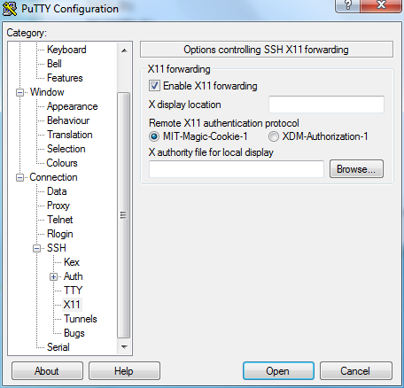
Xming X server¶
In order to use X11 forwarding in PuTTy (or similar), you need to run Xming before starting PuTTy.
- Download from the Xming page or directly from Sourceforge
- Install (default options should work)
- Launch Xming
You can now launch (for instance) PuTTY SSH client and enable X11 forwarding as shown earlier on this page.
MobaXterm¶
This program has both a freeware and a paid version. The freeware version works well for most users. It combines SSH client, X11 server, and SFTP file browser. NOTE that the free version has a number of limits, such as a time-limit on the filebrowser. You may therefore wish to use either FileZilla or WinScp for file transfers instead because of that.
It exists both as an installable version and as a single executable that can be run from an USB stick.
- Download from here.
- Get the Free / Home edition
- Extract it
There is a demo on their homepage, but here are the basic steps to connect to HPC2N’s systems.
- Start the MobaXterm program
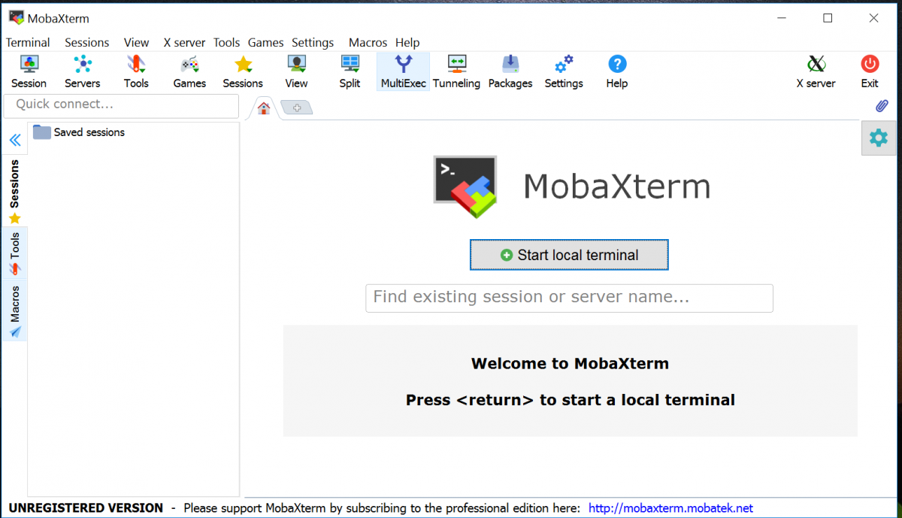
- Click ‘Session’ and then click ‘SSH’ in the new window that opens. Fill in the name of the remote host (kebnekaise.hpc2n.umu.se). Check ‘Specify username’ and fill in your own username (otherwise it will ask for your username when you connect to the system). Click ‘OK’. (Your settings will be saved and you can login again by clicking on the host name under ‘Saved sessions’ on the start up window).
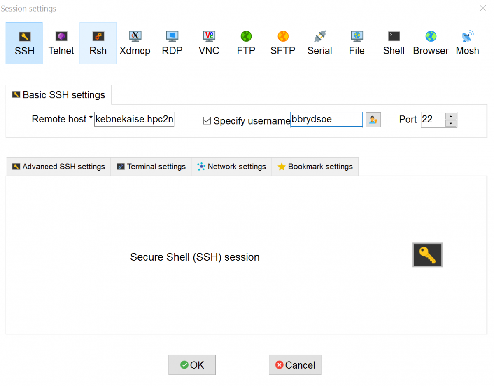
- A new window will open, asking for your HPC2N password.
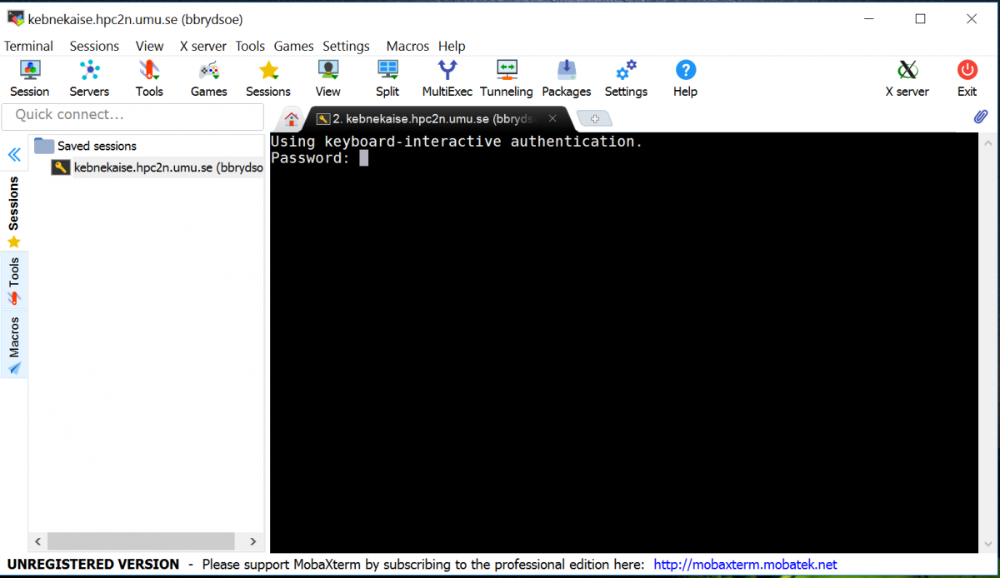
- When you have entered that, you will be logged on to the system (Kebnekaise). Note that there is a file browser on the left with your files on the HPC2N system.
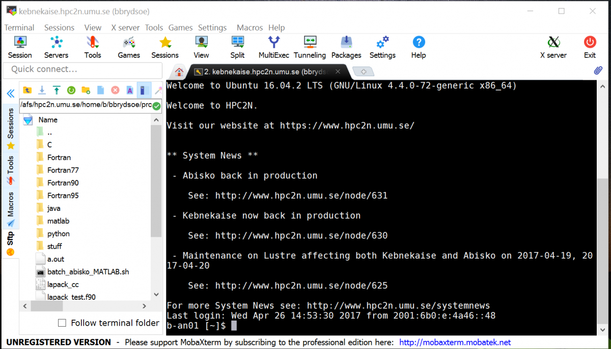
- Since an X11 server is running and the display is sat automatically, you can now open new windows/displays/graphical interfaces from the host you are logged in to, on your own local screen. - You can also transfer files between your local system and the remote system (HPC2N) by using the file browser. Choosing download/upload or just drag-drop works. You can also do things like editing files on the remote system by double-clicking on a file in the file browser or right-clicking and choosing what to do. NOTE that there is a time-limit on the file browser in the free version, and you can not expect to do anything but minor edits through it this way.
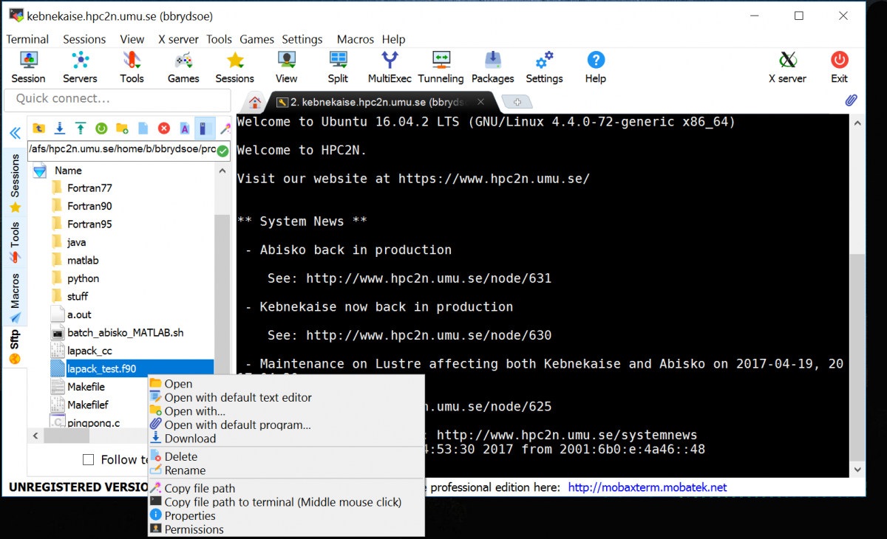
File transfers¶
There are many options, some free, some commercial. Some of the more common ones are:
WinSCP¶
- Download from here. Pick ‘Installation package’.
- Install. During the setup you will be asked to choose between ‘Commander’ and ‘Explorer’. ‘Commander’ is probably the best for most people, but it is your choice.
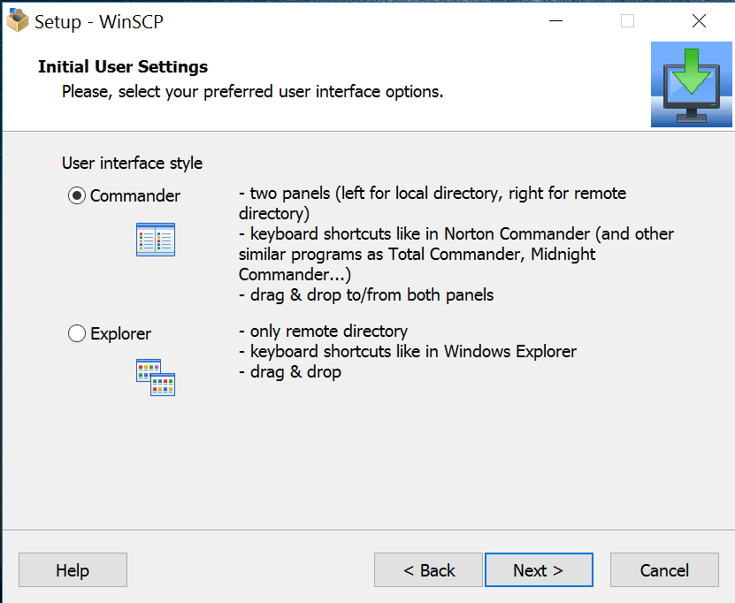
- When the program has installed, start it. Click ‘New Session’. Enter the name of the remote host (kebnekaise.hpc2n.umu.se or abisko.hpc2n.umu.se). Put in your username and password. You can save the session settings so you do not have to enter it next time, but can just click it in the list that will be on the left, but we strongly recommend that you in that case do not save the password.
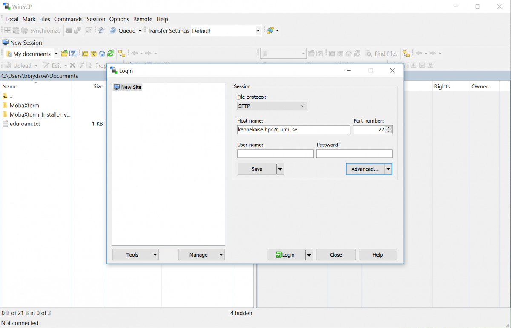
- When you log on to a remote host for the first time you will be asked if you want to continue connecting to an unknown server and add its host key to a cache. Say ‘Yes’. You will now be logged in to HPC2N, to your home directory. You can change directories by clicking, and you can upload/download files with drag-drop.
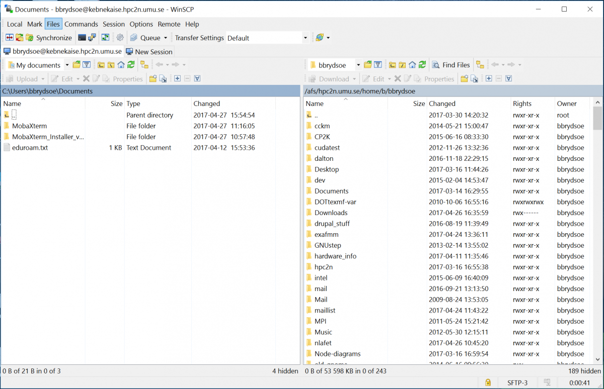
Cyberduck¶
- Download from here. Pick the “Cyberduck for Windows” even if you have Windows 10
- Install
- Start the program
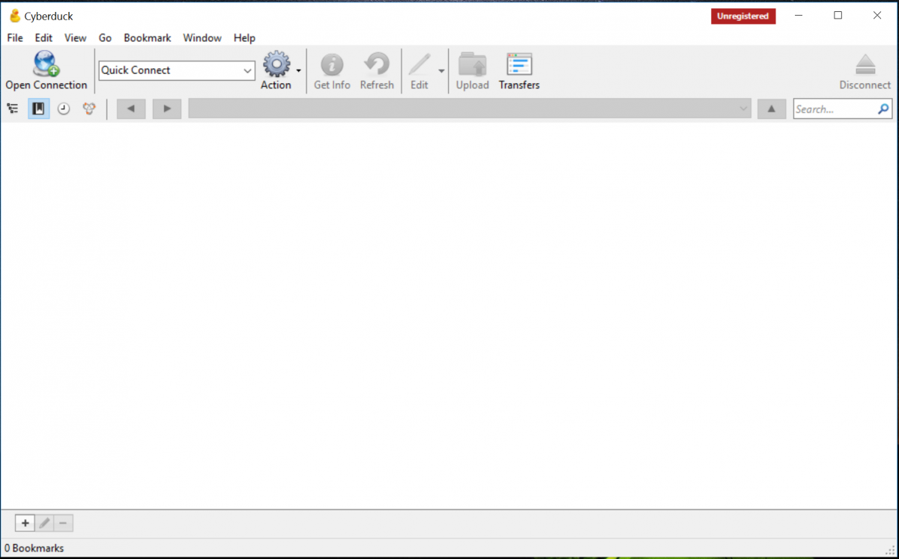
- Click ‘Open Connection’ and enter the name of the remote host (kebnekaise.hpc2n.umu.se), Change the drop-down from ‘FTP’ to ‘SFTP’. Enter your username and password for HPC2N. We strongly recommend that you do NOT save the password.

- When you connect the first time to a remote host, you will be asked if you want to “Allow” or “Deny” an unknown fingerprint. Allow it.
- You are now logged in. You will end up in your home directory. You can change directories and you can upload/download files with drag-drop.
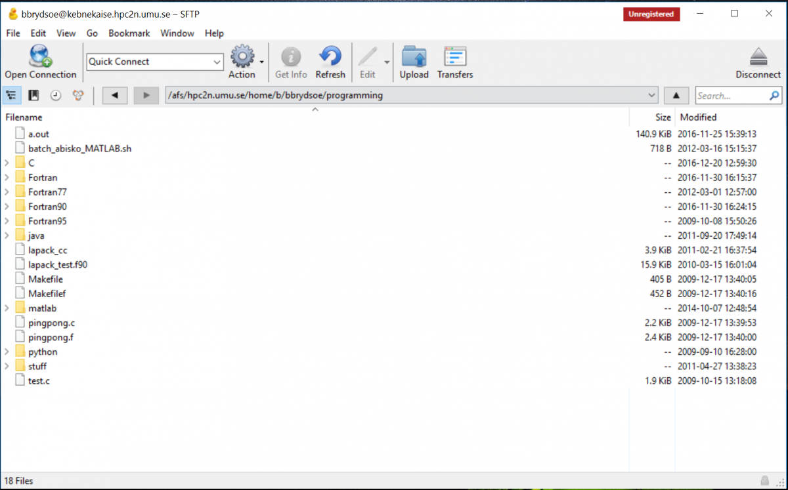
FileZilla¶
The FileZilla Client is free and supports FTP, FTP over TLS (FTPS) and SFTP. It is open source software distributed free of charge under the terms of the GNU General Public License. To connect to HPC2N, you need to use SFTP.
- Go to the FileZilla homepage and pick “Download FileZilla Client”.
- You will get to a page where you can pick “Download FileZilla Client” for your OS.
- Download and install.
Connecting from macOS¶
If you are connecting to HPC2N from a Mac, you have a number of options, aside from the built in SSH client “Terminal”. Several exists, both commercial and free. Here are some of the more common ones:
ssh(built-in in “Terminal”)iTerm2(free)
If you want to be able to open graphical displays (say for opening the Matlab graphical interface), you need an X11 server. It may or may not be installed as standard on Mac, depending on your version, but you can get it by installing XQuartz.
Another option would be to use ThinLinc which exists for all OS and gives you a desktop on Kebnekaise.
You also need to transfer files between your own home computer and HPC2N’s systems. You need to use a secure protocol, so either sftp or scp will work, but not standard ftp. These are some of the options:
On this page we will give brief examples for ssh, Cyberduck and iTerm2, and also tell you how to get FileZilla.
In all cases, we strongly advice against saving passwords.
The simplest way to connect to HPC2N is to use the built-in ssh from “Terminal”.
Note
Remember that the accounts at HPC2N and SUPR are separate. In the welcome mail you got when your HPC2N account was created was a link to create a first, temporary password. When you have logged in using that, please change the password.
SSH clients¶
ssh¶
- Launch “Terminal”
- Connect to Kebnekaise by doing:
ssh -l username kebnekaise.hpc2n.umu.se
where username is your username at HPC2N. - If you need to open displays from the remote host on your local machine (say, for graphical interfaces to some software), you need to make sure XQuartz is installed and running. It should be set up automatically during install.
iTerm2¶
- Download iTerm2
- Install and launch
- Connect to Kebnekaise by doing:
ssh -l username kebnekaise.hpc2n.umu.se
where username is your username at HPC2N. - You now have access to a number of nice features, like split panes, search, paste history, etc. Read more about that here.
File transfers¶
Cyberduck¶
- Download from here or from the Mac App Store
- Install
- Launch the program
- In the Open Connection dialog:
- Select SFTP as protocol
- Enter Server: kebnekaise.hpc2n.umu.se
- Leave Port at default: 22
- Enter your Username and Password at HPC2N
- Click Connect
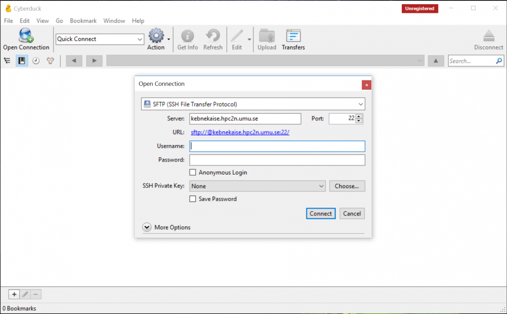
- When you connect the first time to a remote host, you will be asked if you want to “Allow” or “Deny” an unknown fingerprint. Allow it.
- You are now logged in. You will end up in your home directory. You can change directories and you can upload/download files with drag-drop. If you want, you can pick Bookmark -> New Bookmark from the top menu to save the connection settings for next time.

FileZilla¶
The FileZilla Client is free and supports FTP, FTP over TLS (FTPS) and SFTP. It is open source software distributed free of charge under the terms of the GNU General Public License. To connect to HPC2N, you need to use SFTP.
- Go to the FileZilla homepage and pick “Download FileZilla Client”.
- You will get to a page where you can pick “Download FileZilla Client” for your OS.
- Download and install.
Connecting from Linux/Unix¶
If you are connecting to HPC2N from a computer running Linux or Unix, you have a number of options. The most obvious and commonly used one is probably the built-in SSH client SSH. Several others exist, here are some of the more common ones:
ssh(built-in in Linux terminal)PuTTY(free)
If you want to be able to open graphical displays (say for opening the Matlab graphical interface), you need an X11 server. It is installed per default on Linux/Unix systems.
Another option would be to use ThinLinc which exists for all OS and gives you a desktop on Kebnekaise.
You also need to transfer files between your own home computer and HPC2N’s systems. You need to use a secure protocol, so either sftp or scp will work, but not standard ftp. These are some of the options:
On this page we will give brief examples for ssh, scp/sftp, PuTTY, and FileZilla.
Note
You can find more examples for file transfers in the File transfer section on HPC2N’s documentation pages
In all cases, we strongly advice against saving passwords.
The simplest way to connect to HPC2N is to use the built-in ssh from the terminal.
Note
Remember that the accounts at HPC2N and SUPR are separate. In the welcome mail you got when your HPC2N account was created was a link to create a first, temporary password. When you have logged in using that, please change the password.
SSH clients¶
ssh¶
- Launch a terminal
- Connect to Kebnekaise by doing:
ssh username@kebnekaise.hpc2n.umu.se
where username is your username at HPC2N. - If you need to open displays from the remote host on your local machine (say, for graphical interfaces to some software), you must use the flag
-X(or-Yin some cases, if you need to type something in the display, like in MATLAB):
ssh -X username@kebnekaise.hpc2n.umu.se
PuTTY¶
- Download PuTTY
- Unpack the tarball (For version 0.81 - adjust to fit:
tar zxvf putty-0.81.tar.gz)cdinto the directory created by the above command (adjust to fit the version:
- It should build without problems. If you need the graphical utilities instead of just using it from the command line, you need Gtk+-1.2, Gtk+-2.0, or Gtk+-3.0 installed. More information can be found in the file README in the top putty directory.
- Launch the graphical interface with
./puttyfrom the unix directory under the PuTTY directory. - Enter kebnekaise.hpc2n.umu.se as the host:
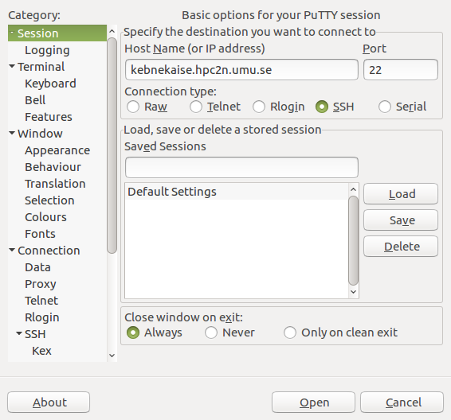
- The first time you connect you will be asked to accept the host key. Do so. Then login with your HPC2N username and password.
- In order to use remote graphical interfaces, you need to enable X11 forwarding:
- Scroll down in the left side of the PuTTY window to SSH.
- Click the small arrow to get to the sub-options.
- Click X11.
- Check “Enable X11 forwarding”:
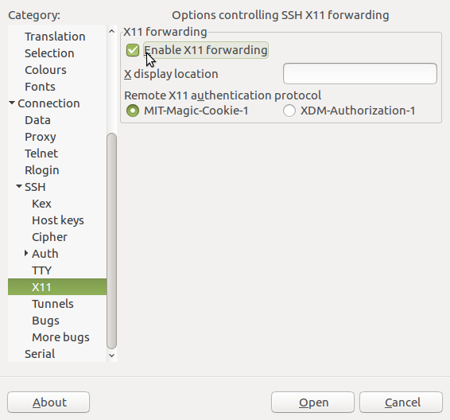
- Launch the graphical interface with
File transfers¶
scp/sftp¶
scpandsftpshould already be installed on your Linux installation
scp¶
scp - secure copy - copies files between hosts on a network. It uses ssh for data transfer.
scp examples
- Copy file from remote host to local host
- Copy file from local host to remote host
- Copy directory from local host to remote host (and renaming directory to new-directory)
- Copy multiple files from local host to your home directory on remote host
- Copy multiple files from remote host to current directory on local host
For more info about scp, type: man scp on the command line.
sftp¶
sftp - secure file transfer program. Similar to FTP, but with many of the features of SSH included.
sftp examples
Interactive
Retrieve files without interaction
For more info about sftp, type: man sftp on the command line.
FileZilla¶
- Ubuntu: download and install with package manager (
apt-get install filezilla) - You can also download from FileZilla homepage if you are not using Ubuntu. Pick the one for “All platforms”. There is one for Debian (the executable is in the bin subdiretory and is called filezilla). If you are not using Debian or Ubuntu, you will probably have to compile from source.
- When building from source (You also need to download and install libfilezilla in much the same way):
- uncompress the tarball (
tar zxvf FILENAME), enter the directory created mkdir compilecd compile../configuremakemake install
- uncompress the tarball (
- This is how it looks when FileZilla has started up:
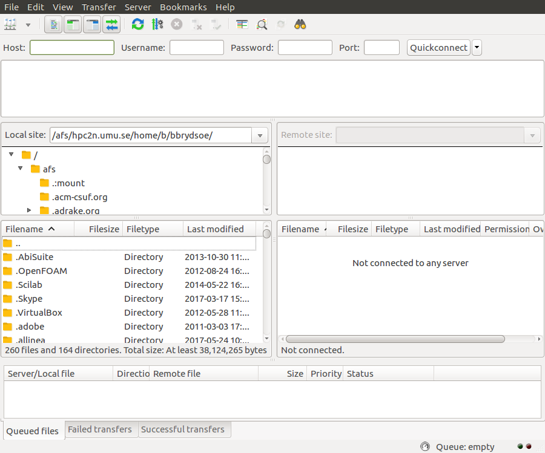
- Connect by entering
kebnekaise.hpc2n.umu.sein the “Host” field, then put in your HPC2N username under “Username”. We strongly recommend not saving your password.